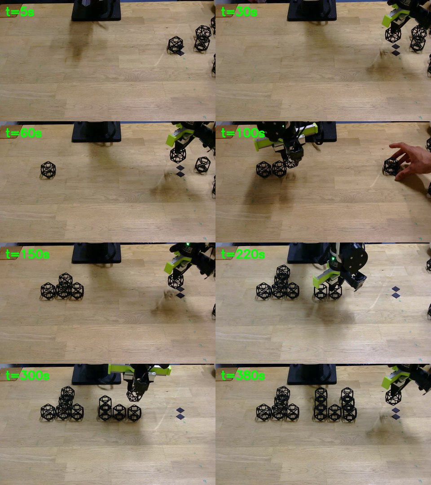

Why this task matters
Assembly in constrained environments often means working with limited floor space, modest compute, constrained budgets, and hardware that still has to be reliable enough to manipulate real objects.
Our hackathon setup focuses on a compact robotic arm arranging small black lattice-like components on a tabletop work area. The scene mirrors real resource-constrained deployments: a narrow workspace, inexpensive cameras, a small arm, and parts that require careful alignment rather than brute force.
The project explores how teleoperation data, multimodal prompting, and lightweight robot control can combine into a practical assembly workflow without assuming a large industrial cell.

Robot and scene backdrop
The setup uses a compact arm mounted beside a wood tabletop. Small black lattice parts sit within reach of the gripper, with dark table markers providing visual anchors for alignment and placement.
The video shows the arm working near the edge of the reachable workspace, moving between loose parts and a forming assembly cluster. This creates a useful testbed for spatial grounding, gripper timing, and robust joint-space execution on a resource-limited robot.
The same repo also includes inference and in-context prompting artifacts for experimenting with VLA style control on the B601 embodiment.
Assembly workflow
Observe the workspace
Use the environment camera to localize loose parts, the gripper, the work surface, and the assembly region.
Approach and align
Move the B601 arm through joint-position targets while using the wrist view for close-range alignment.
Grip and transport
Close the gripper after the object is inside the fingers, then lift and carry it through the small workspace.
Place into assembly
Position parts into a growing structure, respecting the arm limits and the tabletop constraints.
Codebase
The implementation lives in the reBot DevArm repository, including hardware notes, calibration assets, inference helpers, and in-context prompting materials.
github.com/keertimanney/reBot-DevArm